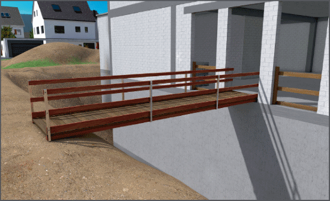
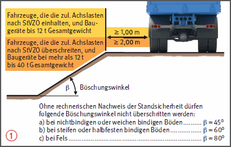
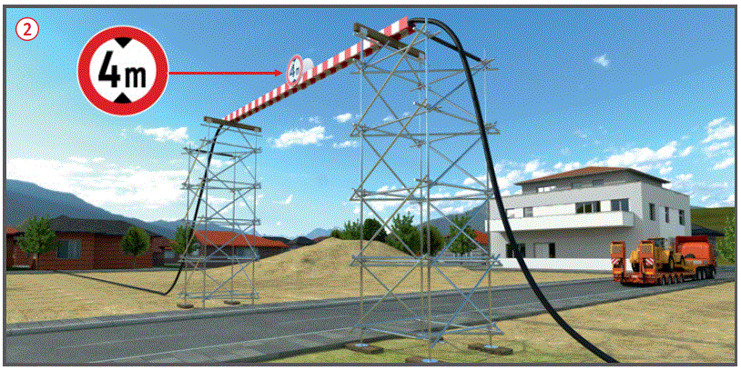
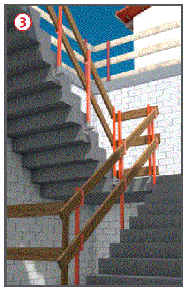
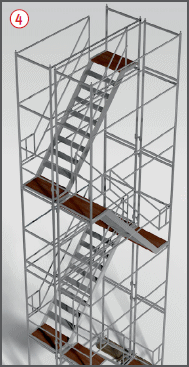
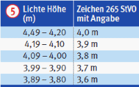

.
. .
.
Verkehrswege auf Baustellen |

Sicherheitsabstände von Fahrzeugen, Baumaschinen oder Baugeräten bei nicht verbauten Baugruben und Gräben mit Böschungen

..
|
Treppen Laufstege |
Sicherung gegenüber dem öffentlichen Verkehr

Verkehrswege zu hoch oder tiefer gelegenen Arbeitsplätzen
 geeignet.
geeignet. 

07/2021